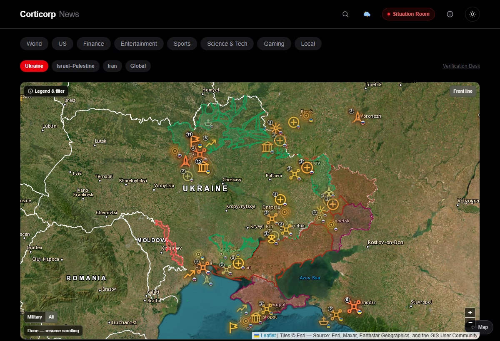
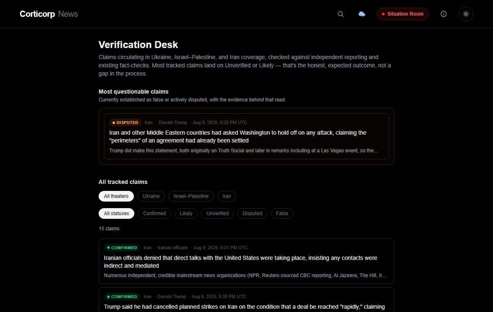
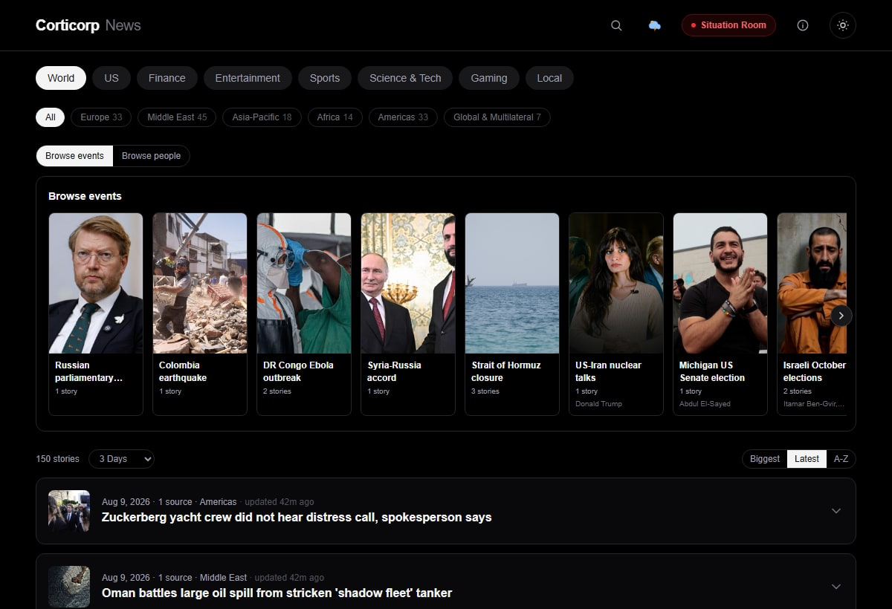
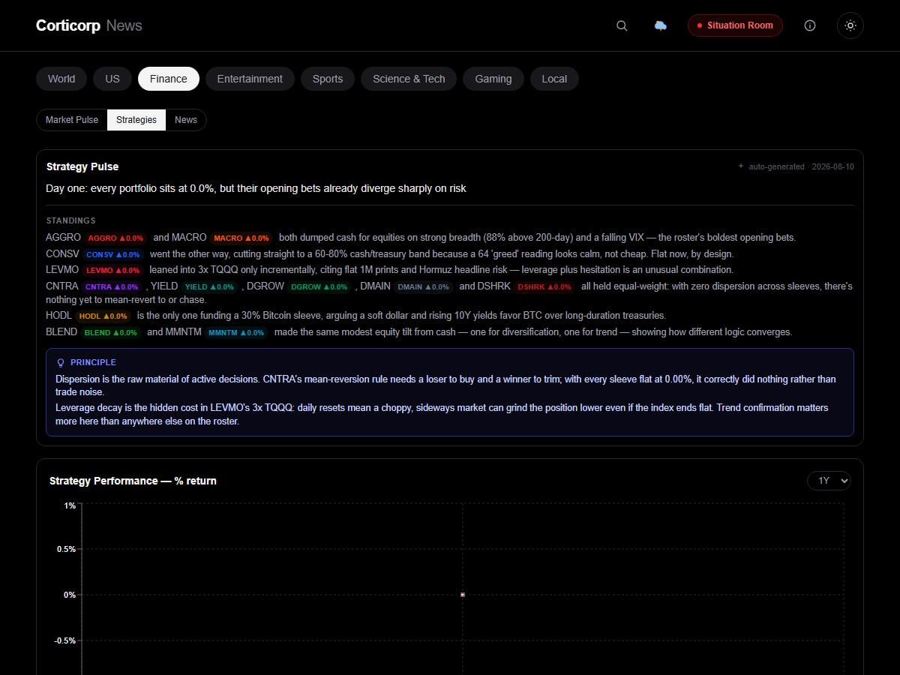
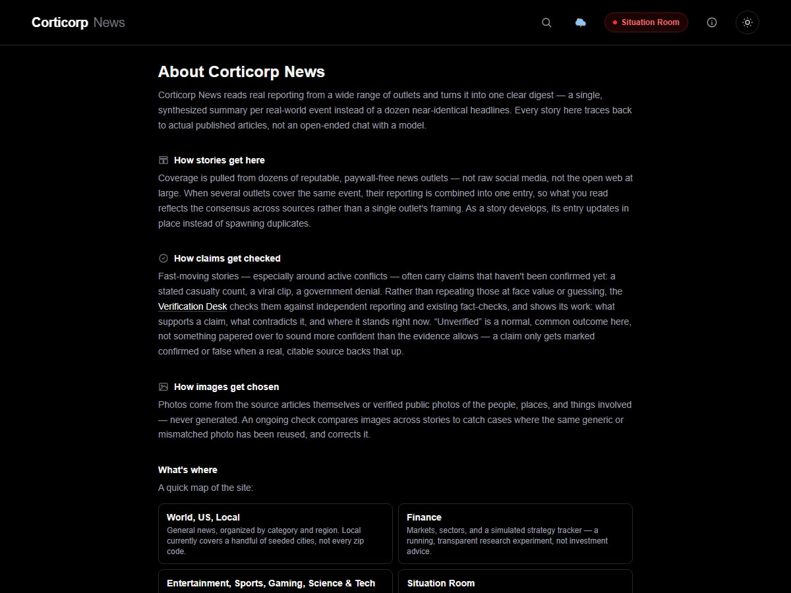

Live web app
An AI-curated news digest that reads dozens of outlets and gives you one synthesized summary per real-world event — not ten near-duplicate headlines. Stories are clustered across paywall-free sources, sorted by section, and backed by a Verification Desk that checks circulating claims against independent reporting instead of repeating them at face value. Ongoing conflicts get their own live, map-driven situation rooms.



How it works
Instead of ten variations of the same story, articles are clustered into a single real-world event and Claude writes one neutral, synthesized summary of what happened.
Pulls from dozens of freely readable outlets via RSS across World, US, Local, Finance, Entertainment, Sports, Science & Tech, and Gaming.
Dedicated, map-driven coverage for Ukraine, Israel–Palestine, and Iran, each with a satellite Leaflet map, military symbology, a front-line overlay, and topic filters.
Claims circulating in Situation Room coverage are checked against independent reporting and existing fact-checks. Confirmed, Likely, Unverified, Disputed, or False — each with the evidence shown, not asserted.
A dozen model-managed portfolios — standard risk tiers, contrarian and momentum disciplines, leveraged and dividend-policy strategies — rebalanced with a stated rationale, plus daily comparative commentary. A transparent research experiment, not investment advice.
Scheduled digest runs execute inside the server process on a cron schedule, so the feed refreshes on its own without a separate worker.
Every event ever published is searchable, with results ranked by relevance across the whole archive.
Every digest is stored in a local SQLite archive with extracted article imagery, served from a lean Next.js 16 / React 19 app with light and dark themes.
A look inside
A live satellite map for the Ukraine, Israel–Palestine, and Iran theatres — corroborated, public event locations with military symbology, a front-line overlay, and filters for military, diplomatic, humanitarian, and economic events.
One synthesized summary per event, grouped by section and region, with a browsable photo carousel of the biggest current stories.
Every claim currently being tracked across the Situation Room theatres — status, sourcing, and the reasoning behind it. Unverified is a normal, honest outcome here, not something smoothed over.

Twelve simulated portfolios, each following a distinct, disciplined philosophy, with a daily AI-written comparison of how they're performing and why.

A plain-language page on how stories get sourced, how claims get checked, and how images get chosen — without exposing the exact mechanics behind any of it.
Built with